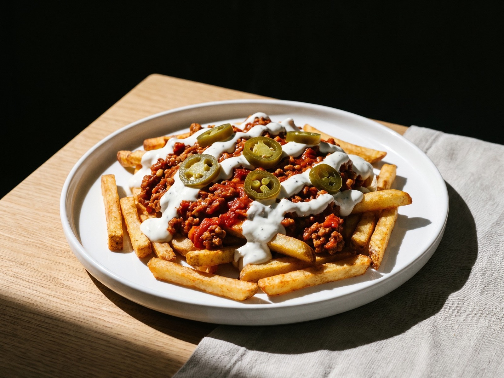

smartcooked
Rezept online
aufrufen
aufrufen

Loaded Tex-Mex Fries
würzig, knusprig & cremig
Zutaten
Für 1 Portionen
| 200 | g | Backofen-Pommesca. 130 kcal je 100 g |
| Für die Hack-Sauce | ||
|---|---|---|
| 50 | g | Veggie Hacktrocken |
| 150 | g | passierte Tomaten |
| 1 | Stück | Zwiebel |
| n. B. | Taco-Gewürz | |
| Für die Soße | ||
| 100 | g | Magerquark0,2 % Fett |
| n. B. | Knoblauchpulver und Salz | |
| n. B. | Jalapeñosaus dem Glas | |
Zubereitung
35 Min.Gesamtzeit
15 Min.Arbeitszeit
20 Min.Koch-/Backzeit
Die Pommes im Airfryer oder Backofen bei 180 bis 200 °C knusprig backen.
Das Veggie-Hack mit heißem Wasser übergießen, 5 bis 8 Minuten ziehen lassen und abgießen.
Die Zwiebel würfeln und in einer Pfanne anbraten, das Hack zugeben und kurz mitbraten.
Passierte Tomaten und Taco-Gewürz zugeben und köcheln lassen, bis eine sämige Sauce entsteht.
Die Pommes auf einen Teller geben und die Hack-Sauce darüber verteilen.
Magerquark mit Knoblauchpulver, Salz und einem Schluck Wasser glatt rühren, über die Fries geben und mit Jalapeños toppen.
Tipp: Wer es milder mag, lässt die Jalapeños weg und nimmt Paprikapulver statt Taco-Gewürz.
Nährwerte pro Portion
laut Quelle590 kcalEnergie
56 gEiweiß
11 gFett
60 gKohlenhydrate